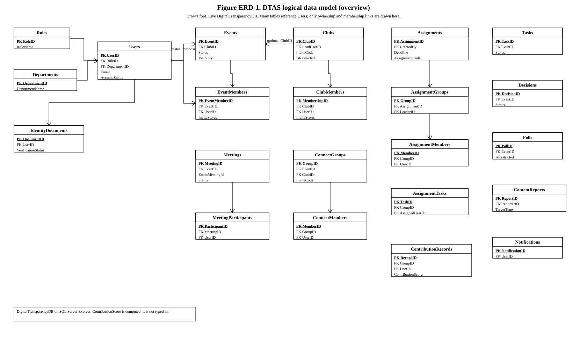
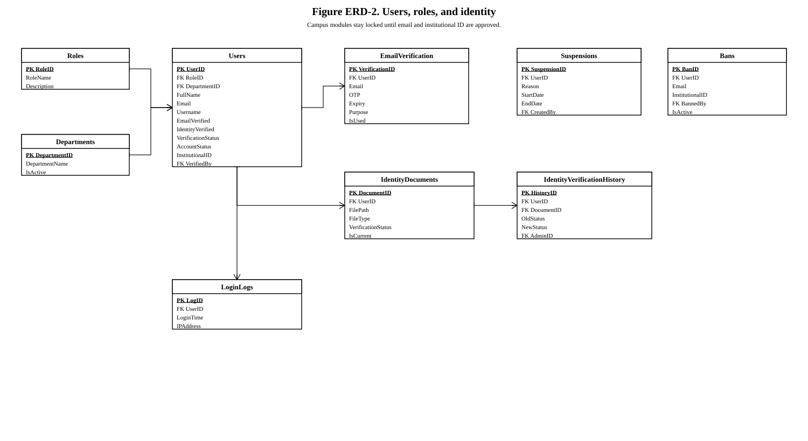
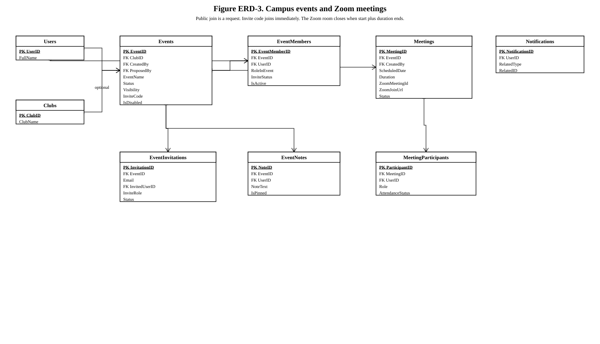
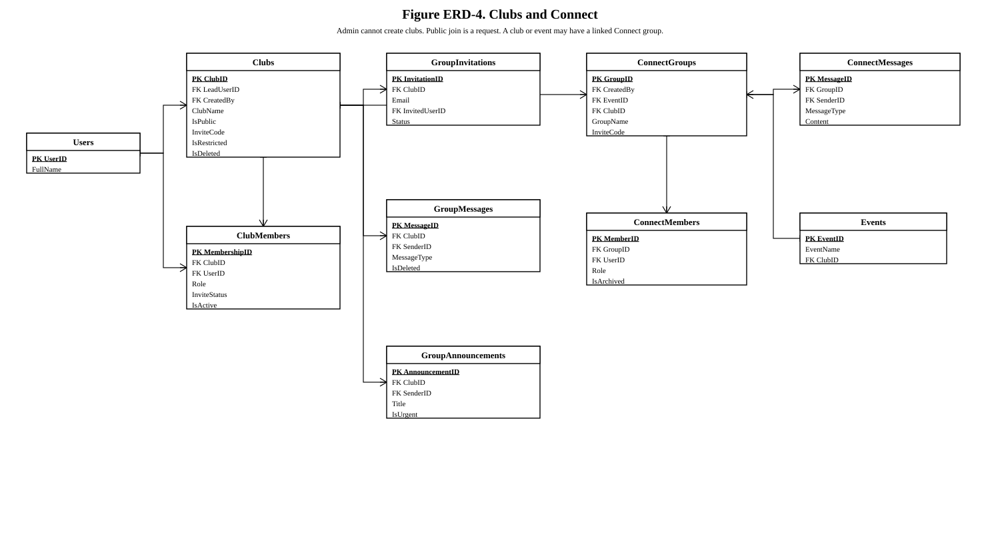
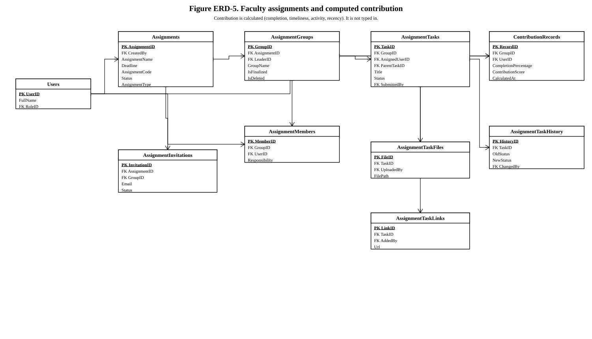
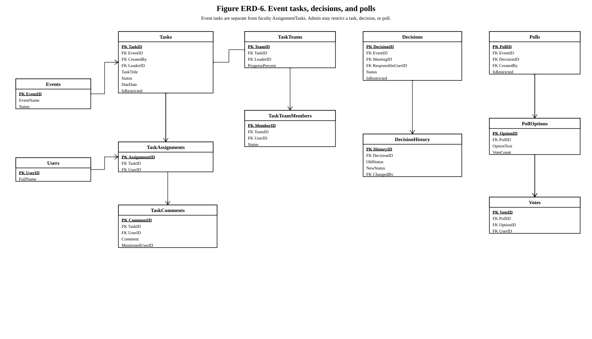
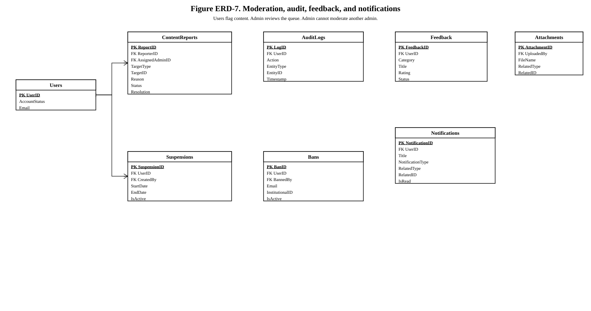

DTAS entity relationship diagrams
Black-and-white crow's-foot ERDs from the live DigitalTransparencyDB schema. PNG, SVG, and draw.io files are in this folder.
- Faculty and staff create events. Students propose events. System Admin does not create events or clubs.
- Public club and event join is a request (InviteStatus). An invite code joins immediately.
- Meetings store ZoomMeetingId and join URL. The room is cleared when status becomes Completed.
- ContributionScore is computed by sp_GetMemberContributionReport. It is not typed in.

Figure ERD-1. Logical data model overview. Live DigitalTransparencyDB.

Figure ERD-2. Users, roles, email OTP, and institutional ID.

Figure ERD-3. Campus events, members, and Zoom meetings.

Figure ERD-4. Clubs and Connect groups.

Figure ERD-5. Faculty assignments and computed contribution.

Figure ERD-6. Event tasks, decisions, and polls.

Figure ERD-7. Moderation, audit, feedback, and notifications.